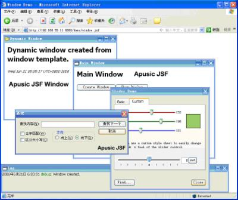
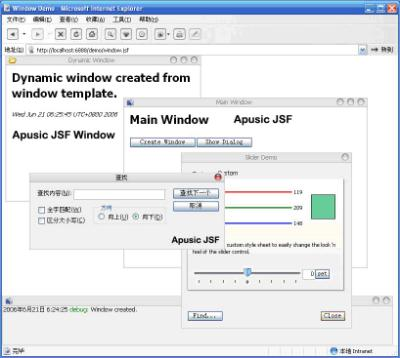

摘要：Ajax其实是一种新瓶装旧酒的过渡技术，相信在未来一到两年之内将被新的技术所代替，它解决问题的方法与手段很难形成一种可高度抽象的框架级解决方案，而JSF则是一种可扩展的框架级解决方案。在J2EE下一代规范Java EE 5.0中，JSF被放到了一个非常重要的地位，J2EE社区试图通过JSF来统一Web应用的开发模式与方法。作为JCP组织成员的金蝶中间件，即将推出中国人作出的Apusic JSF……
1 前言
在J2EE下一代规范Java EE 5.0中，JSF(Java Server Faces)技术被放到了一个非常重要的地位。J2EE社区试图通过JSF来统一Web应用的开发模式与方法。
相对于传统的基于JSP/Servlet的开发模型，JSF能够带来许多好处，譬如：
但同时我们也不得不看到，业界常见的JSF引擎普遍存在着一些缺陷与不足（并不是说JSF技术模型本身的局限，而是常规的实现机制所产生的一些问题），而这些不足将可能对JSF成为日后Web应用主流开发技术带来一定的负面影响，包括：
作为JCP组织成员，金蝶中间件对待JSF技术又是如何思考的？是否打算对JSF进行全面支持？又是通过怎样的解决方案来克服上述不足的呢？
2 JSF与Ajax
一谈到Web开发技术，就不得不提Ajax。这是目前在整个IT界都红得发紫的概念了。在这里我想没必要再去阐述一遍什么是Ajax，但我们可以对Ajax有一个基本的认识。
Ajax其实是一种新瓶装旧酒的技术，它的好处是通过Java Script与DHTML，提供了一种异步编程模型，从而使我们的Web应用给客户带来更好的人机体验。但Ajax解决问题的层面很低；或者说，它解决问题的方法与手段，很难形成一种可高度抽象的框架级解决方案，而JSF则是一种可扩展的框架级解决方案。
事实上，我认为Ajax是一种过渡技术，相信在未来一到两年之内将被新的技术所代替，是微软的XAML、Mozilla的XUL、还是任何可能的RIA标准，实际上整个业界都在观望。但不管采用什么技术，JSF都能适应，对JSF来说适应一个新技术只是更换一个Render Kit而已。举一个例子，如果想在网页中实现图表功能（Chart)，MSIE有VML，Gecko和Opera有SVG，而在服务器端只需要简单地判断一下浏览器类型就可以选择一个Render Kit生成不同的markup来完成相同的功能，这是用常规JSP技术很难完成的任务。
3 Apusic JSF：中国人做出的JSF引擎\
3.1 容器级别的Ajax支持
目前有JSF + Ajax这种思路的，恐怕也不是金蝶中间件一家，但很多第三方的JSF + Ajax实现是提供一个组件库以及一个附加的Servlet 或Filter来处理Ajax请求，而我们是直接由JSF容器来处理Ajax请求的。我们会根据请求的类型来判断这是一个正常的HTTP请求还是一个 Ajax请求。如果是一个常规HTTP请求就运行JSP页面，生成页面文档（并且我们会在生成的页面文档中嵌入Ajax所必须的Java Script代码，后文提及）；如果该请求是一个Ajax请求，服务器对请求参数正常解码，并执行JSF中除页面输出阶段以外的所有其他阶段，这时将生成一个JSF的组件树，遍历该组件树，从中找出发生变化的数据，并将这些数据打包成一个Ajax应答，并由客户端来更新这些修改的数据，甚至改变页面外观。
在JSF规范中，JSF页面输出阶段所采用的Render Kit是可替换的，默认的HTML_BASIC Render Kit输出的是标准的HTML语法，不包含任何Java Script代码，Apusic JSF引擎实现了一个 AJAX Render Kit，可以在HTML文档中嵌入Java Script代码来实现Ajax特性，而替换Render Kit只需要修改配置文件即可。
那么，这样能够带来怎样的好处呢？
3.2 提升JSF运行性能，带来更好的人机体验。
常规JSF容器在状态维护方面的通用做法是：基于Session的，或者基于请求传递型的，这就意味着，当每进行一次客户端与服务器端的响应时，都需要把所有的状态传来传去，这无疑会对系统的运行性能带来较大的负面影响，从而使开发人员误以为：JSF是一种重量级的技术模型。
而通过Apusic JSF的Ajax特性，我们能够只把发生变化的数据打包成Ajax请求发送给服务器端，而服务器端也只会将发生变化的数据打包成Ajax应答，从而大大提升系统的运行效率。并且，传统的JSF请求应答将刷新整个页面，而Apusic JSF将只更新发生变化的客户端组件，从而给客户带来更好的人机体验。
3.3 简化Ajax的开发
以前要写Ajax应用要写很多Java Script代码，开发、调试、维护这些 Script脚本都相当烦琐，如果采用Apusic JSF技术，你不再需要编写任何Java Script代码，引擎已经帮你生成了这些代码。Apusic JSF所有的标准组件都是支持Ajax的，某些第三方组件可能本身并不支持 Ajax，但使用一个名为<ajax:renderGroup>的标签，可以立即将这个第三方组件转换成Ajax Enabled。例如Apache myfaces的Tomahawk项目提供了一个Tree组件，这个组件本身并不支持Ajax，每当按下一个Tree结点都将重新刷新整个页面，使用<ajax:renderGroup>标签后则只刷新Tree部分，而不刷新页面的其他部分。当然更好的方式是提供一个本身就支持AJAX的Tree组件，以减少冗余数据的传递。
Apusic JSF还提供了一个名为<ajax:status>的标签，可以接受在发送和完成一个Ajax请求时触发的事件，缺省的实现是在发送 Ajax请求之前显示一个HTML片段，在完成Ajax请求之后显示另一个HTML片段，这些HTML片段可以包含文字和图片。更高级的用法是可以设置<ajax:status> 标签的onstart和onstop属性，在开始和完成Ajax请求时执行一段Java Script代码以实现更复杂的效果。
此外，我们还实现了一个<ajax:invoke> 标签，可以以RPC方式调用服务器端Java对象的某个方法。
3.4 其它特性
采用Apusic JSF还包含其它一些差异化特性，包括：控件的换肤功能，控件对IE、Mozilla(Firefox)、Opera等多浏览器的支持，以及强大的布局功能等。

http://www.sawin.cn/News/share/391431.jpg
图一 Windows 风格的 Apusic JSF组件与布局
在<图一>中所展示的是通过Apusic JSF生成的完全基于HTML, CSS, Java Script的界面，它们和一个真正的窗口系统几乎完全一样，包括移动位置、改变堆叠顺序、以及模式对话框等，但实际上他们都是“假”窗口。另外需要着重指出的是，这里完全采用CSS布局，避免了旧有的依赖于HTML Table嵌套的布局方式，从而使我们的程序具有更好的可维护性。针对这样一个界面，我们可以观察一下具体的实现代码，以<图一>中的Main Window为例：
| <w:window jsvar="mainWnd" label="Main Window" show="true" left="0" top="0" width="500" height="350" contentPaneStyleClass="normal-window" showIcon="true" showMinimize="true" showMaximize="true" showClose="true" onclose="window.location='index.html'"> <h2>Main Window</h2> <p> <button onclick="createWindow()">Create Window</button> <button onclick="dlgTest.show()">Show Dialog</button> </p> <%@ include file="/WEB-INF/apusicjsf.inc" %> </w:window> |
我们发觉，通过Apusic JSF，实现上述UI界面其实并不复杂，只需要通过简单的几行代码，就能够完成复杂的UI界面。
Apusic JSF还支持控件的换肤功能。以上述界面为例，我们可以查看Mac OS风格的界面样式，如图二所示。
4 开发工具的支持：Apusic Studio
在JSF规范中，有这样一句话：“JSF is designed to be tooled”。换言之，JSF规范从设计初开始，就非常强调对工具支持的依赖。幸运的是，目前对JSF提供支持的开发工具也逐渐丰富了起来，包括Oracle JDeveloper、Sun Java Studio Creator等等。金蝶中间件也同样提供了一个基于Eclipse的集成式开发环境：Apusic Studio，并通过该工具，能够给JSF的开发带来良好的支持，包括：语法加亮、代码辅助、断点调试、可视化的设计等等。

http://www.sawin.cn/News/share/391435.jpg
5 参考资料
注： Apusic应用服务器、Apusic Studio参见http://www.apusic.com
作者链接：“影响中国软件开发的20人”袁红岗部分（http://news.chinabyte.com/334/1760834_3.shtml）
“人物：袁红岗，所属公司：金蝶中间件公司
入选理由：最早开发Windows上的企业应用软件，打造独立知识产权的EJB服务器
很多JAVA程序员对袁红岗极其佩服，源于他做了很多人不敢想更不敢做的事情，这就是他打造了国产的EJB服务器，很快，金蝶将在国内推出自主产权EJB服务器的3.0版本。
同时，袁红岗还是在Windows平台上开发企业应用软件的最早的一批程序员，当时写出的适合小型企业使用的财务购销存一体化软件KINGDEE 2.7，令IT行业对金蝶刮目相看，使金蝶一举成名，正是这些人才奠定了中国的管理软件的基础。
袁红岗将自己多年的经验以一种朴实的风格写出来，这些帖子在网上也影响深远。”